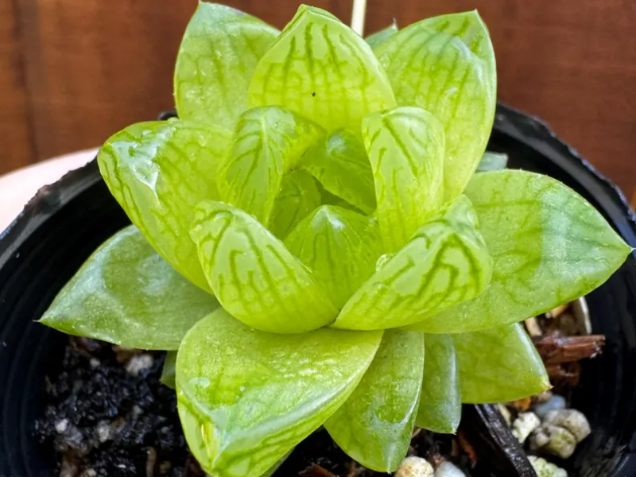
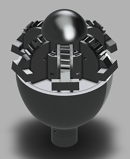
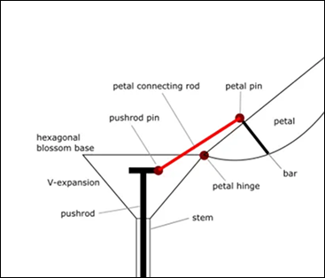
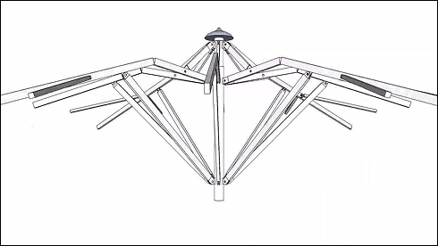
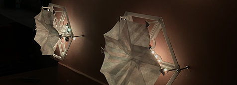
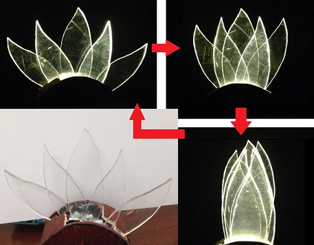
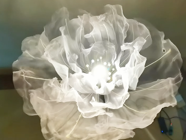

Final Project — Electronic Plants
↖ Learning resources ↗
↖ It may be useful in the future ↗
Concept
I want to create an electronic plant inspired by the biological behaviors of real plants.
In electronics, electricity is often compared to the flow of water. This made me think about how
plants absorb, store, and use water and energy to survive.
I want to explore the possibility of using a solar panel to collect light and store electrical
energy, allowing an artificial plant to move and glow.
Ideally, the plant would be powered entirely by solar energy. For the initial prototype, I may
use an external power source to test the interactions and mechanical movements.

Idea 1: Succulent
Succulents have thick leaves for storing water and translucent leaf tips that allow
light to
enter.
I am interested in the relationship between water storage and turgor pressure, the
internal
pressure created by water inside plant cells. Turgor pressure helps plants maintain
their
shape,
and changes in water pressure can also drive certain plant movements.
Inspired by this mechanism, I want to create an artificial succulent that stores
electrical
energy instead of water.
The plant would collect light through a solar panel and store the energy in a
rechargeable
battery or supercapacitor.
As the stored energy increases, its leaves would gradually open, as if they were filling
with
water and becoming firm. The leaves would be made of translucent materials, allowing
light
to
glow from within. Their brightness would change depending on the amount of stored
energy.
When the energy decreases, the leaves would slowly close or droop, mimicking the loss of
turgor
pressure when plants become dehydrated.
Through this project, I want to explore how electrical energy can be translated into
physical
movement, using water pressure in plants as an inspiration.
Components
- Arduino / microcontroller
- Solar panel
- Rechargeable battery or supercapacitor
- LEDs
- Servo motor
- Translucent silicone or other flexible materials
Idea 2: Flower
Sunflowers and the way plants respond to light (phototropism).
I want to create an electronic flower that can sense and respond to its environment.
The flower would use light sensors to detect the direction of light and slowly turn
toward
it,
similar to how young sunflowers follow the sun.
It could also interact with people. When someone approaches, the flower might open its
petals or
gently move toward them. I would also like to explore how the petals could move or sway
in
response to human interaction.
The flower could use a solar panel to collect energy, which would power its movements
and
lighting.
Components
- Arduino / microcontroller
- Solar panel
- Rechargeable battery or supercapacitor
- LEDs
- Servo motor
- Light sensors / phototransistors
- Distance sensor
- Mechanical petals and flexible materials
Mechanism



References
Blooming

Moving Lamp: Blooming Lotus

Flower
